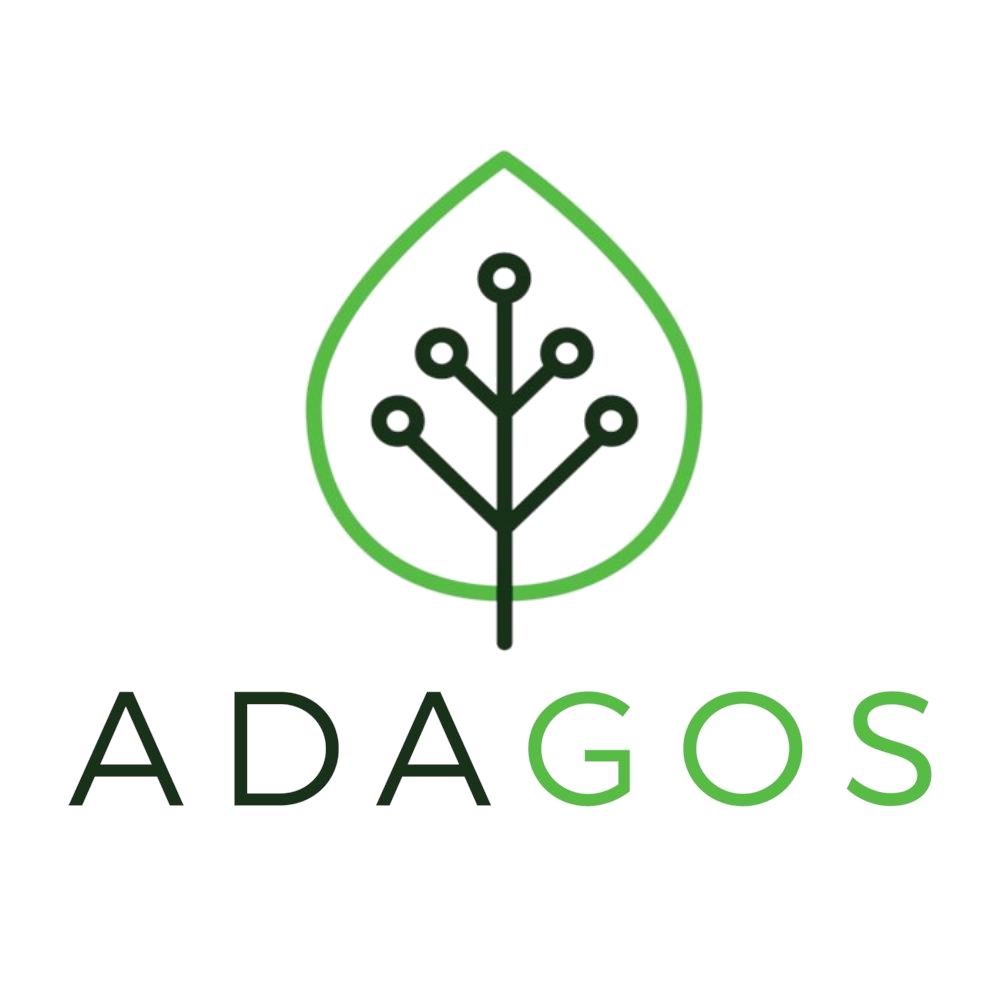

Stratégie :
Ilek repose sur une stratégie BUSINESS séparée par des stratégies de métiers sur chaque DAS (Domaine d’Activité Stratégique).
Stratégie de coût :
Ilek emploie une domination par les coûts pour pratiquer des prix inférieurs à la concurrence. En possédant des producteurs écolo et locaux, la société minimise les coûts d’approvisionnement mais également de distribution car l’Etat joue un rôle clé de régulation.
Stratégie de différenciation :
La différenciation crée un avantage perçu comme unique par le client. Ainsi, Ilek utilise une stratégie de différenciation de rupture car l’entreprise essaye de réaliser une domination par les coûts en proposant une nouvelle fois des prix concurrentiels.
Focalisation :
L’organisation est actuellement sur une stratégie de créneau puisqu’elle est non seulement commune aux PME, mais l’entreprise toulousaine connaît les délimitations de son domaine, ses produits, sa zone géographique ainsi que la clientèle ciblée.
Exemples de moyens de mise en oeuvre des stratégies (croissance interne) :
La politique de mise en œuvre par Ilek est axée sur une croissance interne avec un investissement dédié à un développement constant de l’entreprise et de sa gamme de produits mais aussi à son indépendance et au recrutement qu’elle puisse réaliser (que ce soit pour de nouveaux salariés ou encore pour bénéficier de nouveaux producteurs).
Cohérence d’ensemble :
L’entreprise choisie est prénommée Ilek et correspond à la demande du contexte de ce site, car figurant parmi les organisations proposées sur le site GreenTech Innovation et située en occitanie avec pour domaine GreenTech les énergies renouvelables.

Stratégie :
Adagos repose sur une stratégie CORPORATE déterminant et encadrant ses activités.
Stratégie de niche (spécialisation) :
L’entreprise étant spécialisée dans l’Intelligence Artificielle et l’optimisation des données, développe une gamme de produits ainsi que de possibles services collaboratifs pour une clientèle particulière et non pas pour un marché de masse déjà occupé par la concurrence.
L’intégration :
L'organisation est ouverte à la collaboration avec d’autres entreprises spécialisées dans d’autres domaines. Cependant, elle n'intègre pas directement de nouveaux domaines d’activité, elle ne fait qu'adapter le sien, l’IA, à ces derniers.
Croissance interne :
L’entreprise se développe d'elle-même par la mobilisation de ses ressources internes, c’est-à-dire, son savoir-faire, ses compétences ou ses ressources économiques, ce qui en fait une entreprise indépendante, mais limitée pour se lancer sur de nouveaux marchés.
Stratégie technologique :
Adagos introduit son logiciel NeurEco dans le domaine de l’Intelligence Artificielle, un produit innovant voire révolutionnaire pouvant potentiellement entraîner une rupture rendant les produits de ses la concurrence obsolètes à l’avenir. Ce développement qualitatif de l’entreprise est en plus relayé par la communication via les réseaux sociaux, lors de conférences et même sur des journaux écrits ou télévisés.
Cohérence d’ensemble :
L’entreprise choisie est prénommée Adagos et correspond à la demande du contexte de ce site, car figurant parmi les organisations proposées sur le site GreenTech Innovation et située en occitanie avec pour domaine GreenTech le numérique durable.